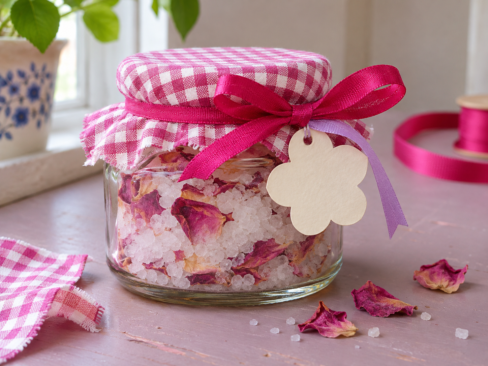

Badesalt med rosenblade
Med groft salt, tørrede rosenblade og et genbrugsglas kan du lave en lille gave til et varmt fodbad. Bind et bånd om glasset, og sæt et kort på med en hilsen og et tip til, hvordan badesaltet bruges. Så har du en personlig værtindegave, du kan lave med det, du allerede har..
Se hvordan du gør